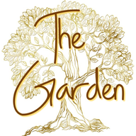

Gethsemane Garden
A Place of Prayer, Surrender & Growth
Kankakee
Daily Word •
Red Letters • From The Garden
No login • Anonymous
Kankakee, IL
Visit Our Church
gardenchurchkankakee.com
YouTube @GardenK3
Sermons
Facebook
TheGardens1500